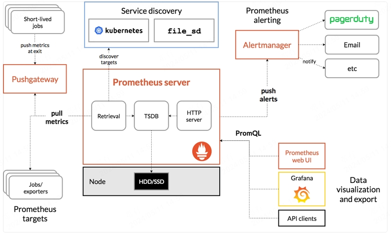

Kubernetes监控
Prometheus
Prometheus简介
Prometheus 是最初在 SoundCloud 上构建的开源系统监视和警报工具包。自2012年成立以来，许多公司和组织都采用了Prometheus，该项目拥有非常活跃的开发人员和用户社区。现在，它是一个独立的开源项目，并且独立于任何公司进行维护。为了强调这一点并阐明项目的治理结构，Prometheus在2016年加入了 Cloud Native Computing Foundation，这是继 Kubernetes 之后的第二个托管项目。
多维度模型，使用指标名称和键值对标识时间序列数据
灵活的查询语言PromQL,可以李勇数据的多为特性进行查询
不依赖分布式存储，单个服务接待你是自治的
通过HTTP的拉取模型进行时间序列的推送
可以通过中间网关进行时间序列推送
可以通过服务发现或静态配置发现监控目标
提供多种图形和仪表盘支持
Prometheus组件
Prometheus 生态系统包含多个组件，其中许多是可选的：
用于采集和存取时间序列数据的 Prometheus server
用于监测应用的客户端库
用于支持短期的作业的 push gateway
诸如 HAProxy，StatsD，Graphite 等服务的专用 exporter
用于处理告警的 alertmanager
多种工具支持
